Jim, un ingenuo delfín, recibe la misión de pilotar el primer submarino con ruedas del mundo. Acompañalo en esta aventura marcada por la amistad.
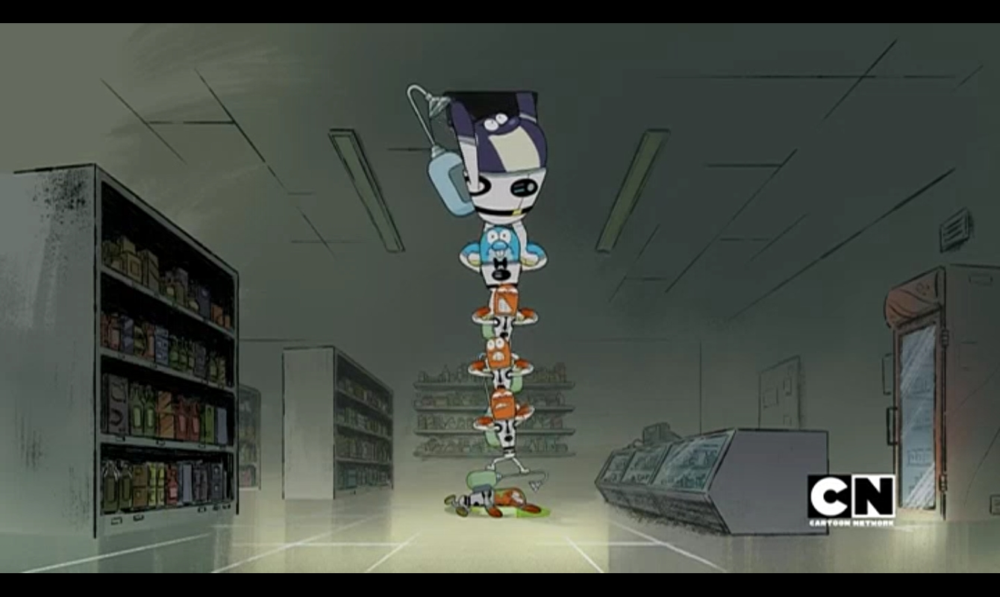
Jim se dispone a rescatar unas sardinas, que se perdieron.
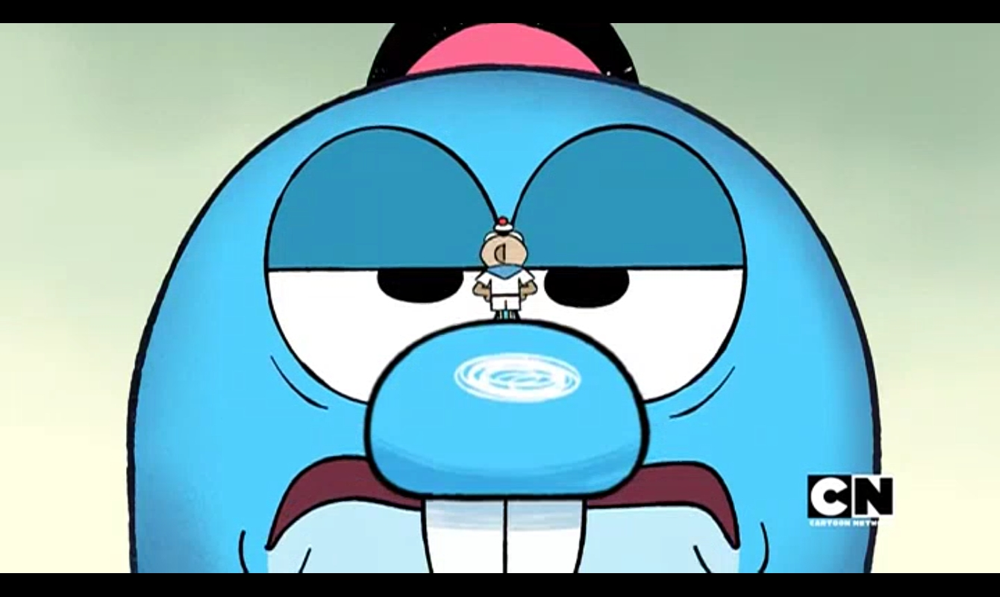
Un erizo de mar acosa a Jim.
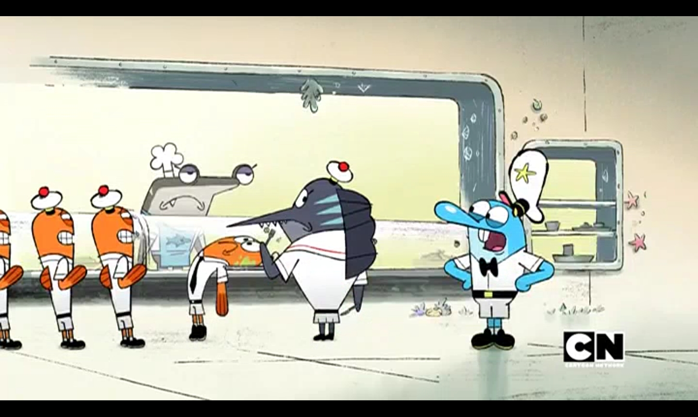
Jim se sumerge en el audaz plan de Cyril para conseguir una salsa roja que los humanos usan.
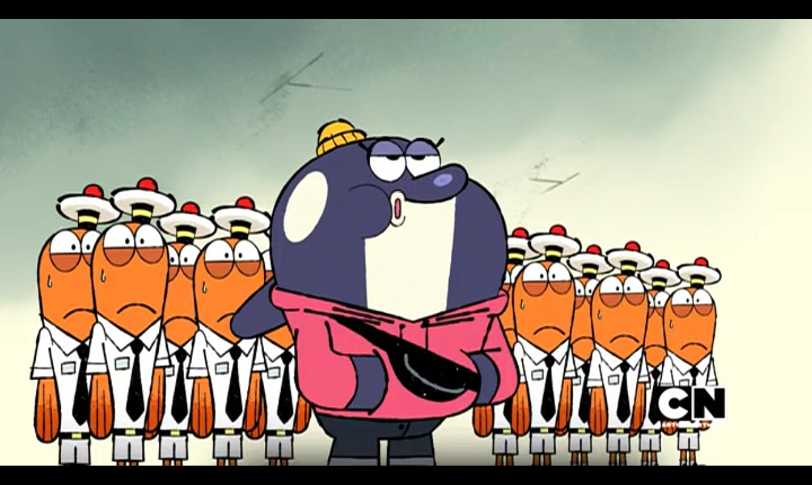
Jim implementa diversas medidas de ahorro de agua en el submarino.
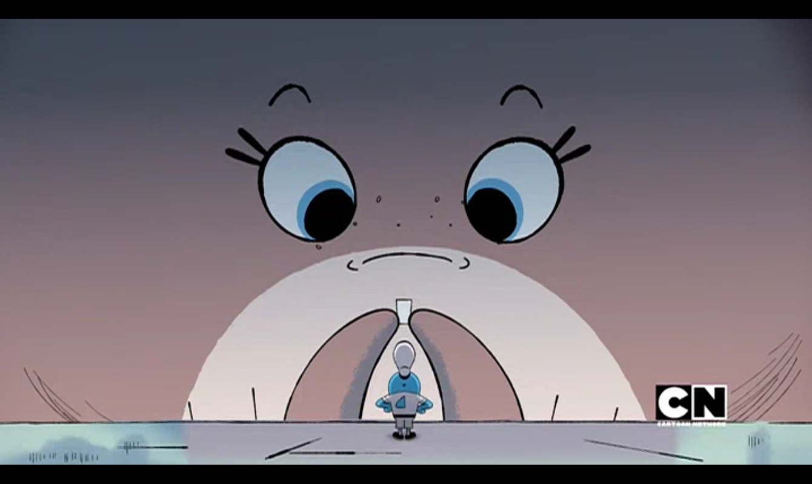
Jim se siente excluido cuando las sardinas organizan una fiesta a la que no está invitado.
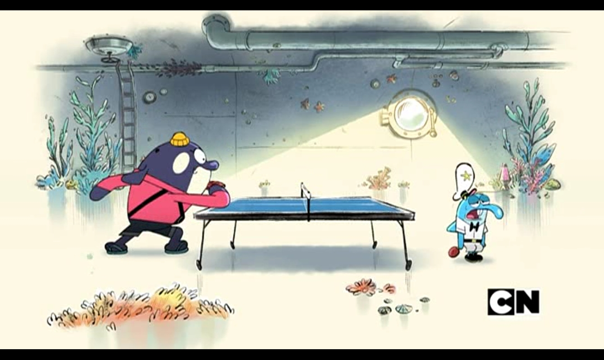
Bianca debe pagar el rescate de Roy sin que Jim se entere.
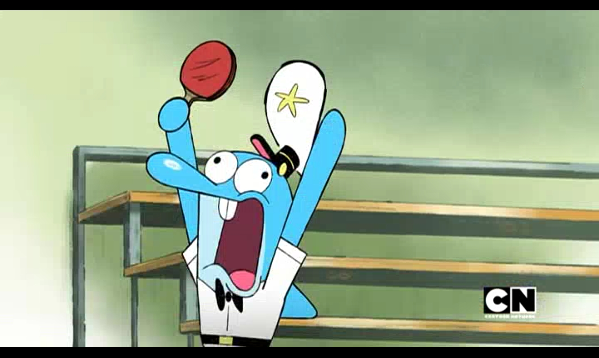
Un torneo de ping-pong expone los verdaderos niveles de habilidad de Jim y Bianca.
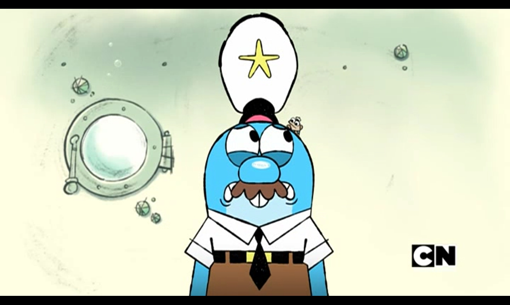
Jim intenta actuar como un adulto para evitar un motín por el menú.
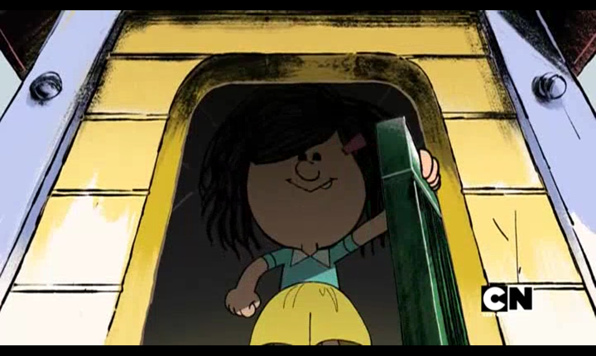
Jim y Bianca se embarcan en una arriesgada misión para recuperar cebollas.
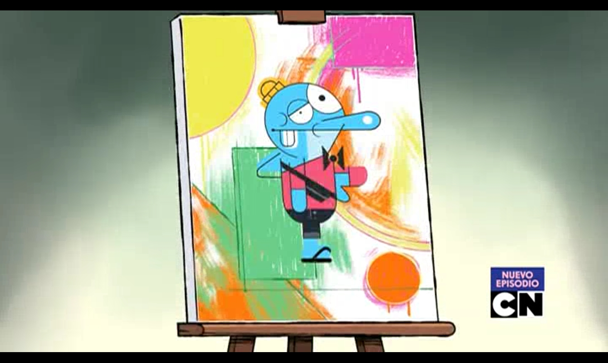
Jim encarga retratos atrevidos para inspirar a su equipo.
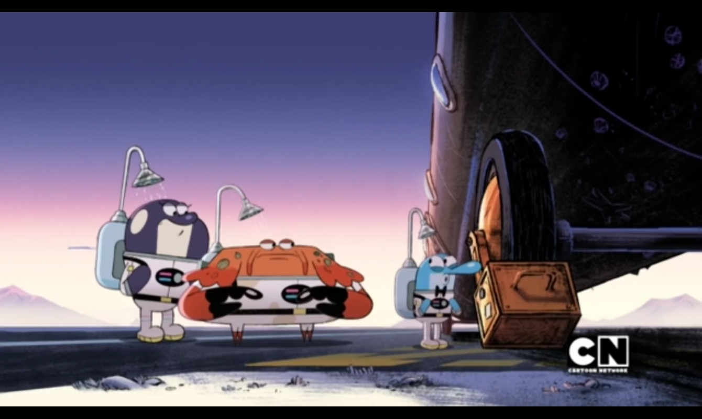
El pasado de Bianca regresa y el submarino se infiltra para protegerla.
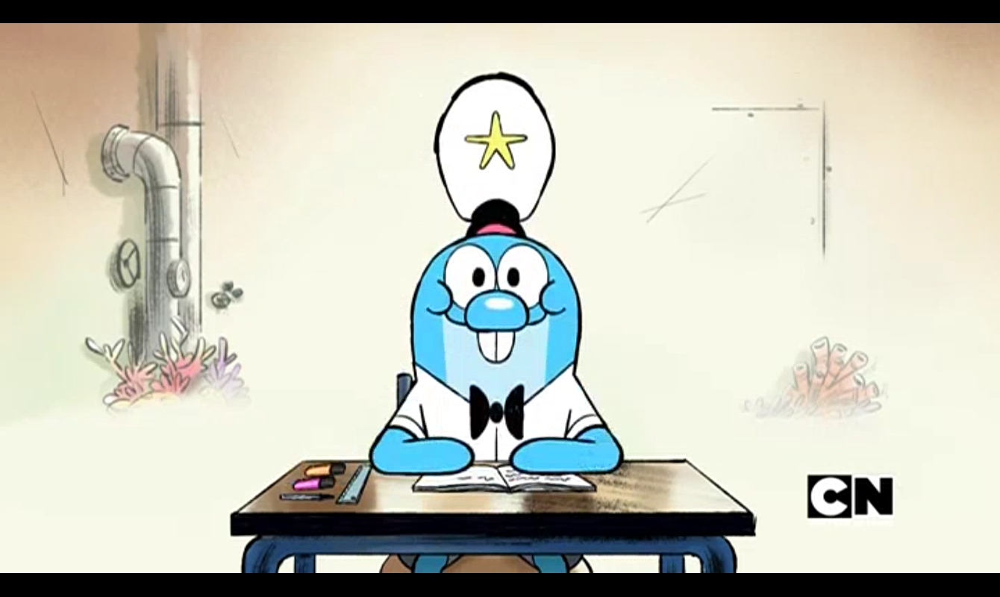
Jim cambia el mando por las dificultades de la vida estudiantil.
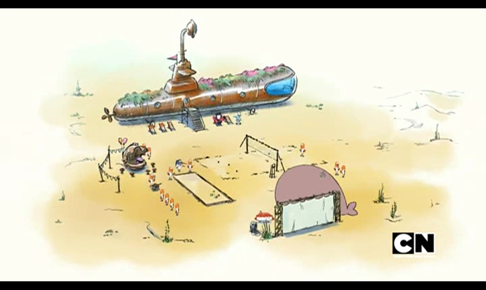
Jim lleva al equipo de acampada al fondo de un lago.